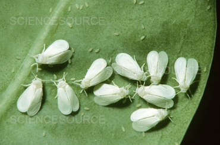
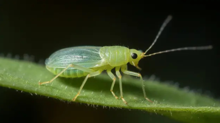
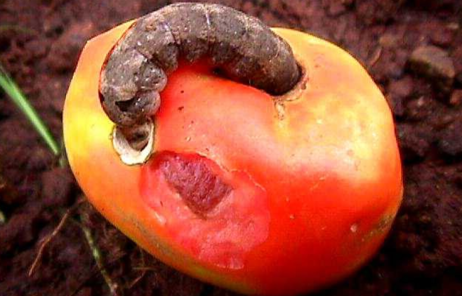
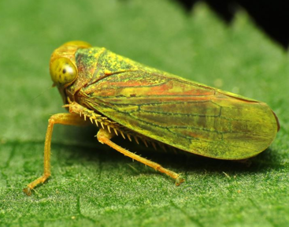

| Year-round, but more common in warm and humid conditions. |
Throughout the growing season. |
Whiteflies (Bemisia Tabaci) |
Neem-based products, insecticidal soaps, pyrethroids. |
 |
| Cool to warm seasons. |
Late fall to early spring. |
Aphids (Aphididae) |
Neonicotinoids, pyrethroids, insecticidal soaps. |
 |
| Warm season. |
Late spring to early fall. |
Tomato Fruit Borer (Helicoverpa Armigera) |
Pesticide: Bacillus Thuringiensis (Bt), Spinosad. |
 |
| Warm season. |
Late spring to early fall. |
Leafhoppers |
Pesticide: Neonicotinoids, pyrethroids. |
 |